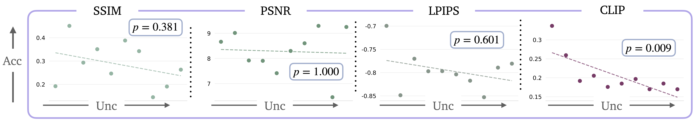
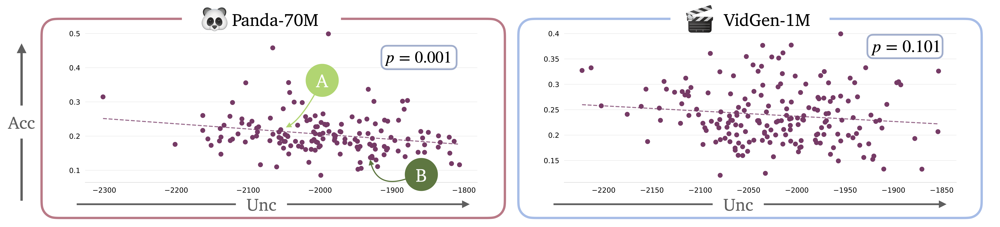
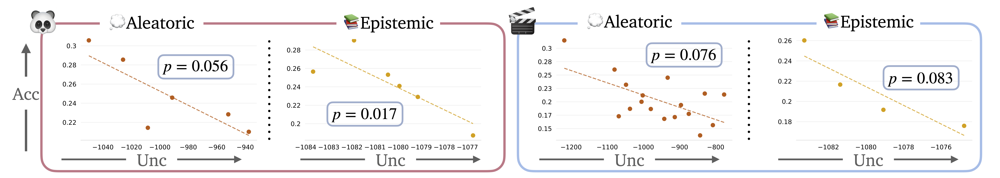

We introduce
Semantically-Quantifying Uncertainty with Bayesin Decomposition (S-QUBED), a method to
quantify the uncertainty for generative video models.
Abstract
Generative video models demonstrate impressive text-to-video capabilities,
spurring widespread adoption in many real-world applications. However, like
large language models (LLMs), video generation models tend to hallucinate, pro-
ducing plausible videos even when they are factually wrong. Although uncertainty
quantification (UQ) of LLMs has been extensively studied in prior work, no UQ
method for video models exists, raising critical safety concerns. To our knowl-
edge, this paper represents the first work towards quantifying the uncertainty of
video models. We present a framework for uncertainty quantification of generative
video models, consisting of: (i) a metric for evaluating the calibration of video
models based on robust rank correlation estimation with no stringent modeling
assumptions; (ii) a black-box UQ method for video models (termed S-QUBED),
which leverages latent modeling to rigorously decompose predictive uncertainty
into its aleatoric and epistemic components; and (iii) a UQ dataset to facilitate
benchmarking calibration in video models, which will be released after the review
process. By conditioning the generation task in the latent space, we disentangle
uncertainty arising due to vague task specifications from that arising from lack
of knowledge. Through extensive experiments on benchmark video datasets, we
demonstrate that S-QUBED computes calibrated total uncertainty estimates that are
negatively correlated with the task accuracy and effectively computes the aleatoric
and epistemic constituents.
S-QUBED Method
Given a text prompt , our goal is to quantify the uncertainty
of the video generation model. We first generate n latent prompts consistent with in line with the
prompt refinement used by video models, modeling the aleatoric uncertainty as the entropy of the
distribution over latent prompts. Then, for each latent prompt, we generate m videos, modeling the
epistemic uncertainty as the conditional entropy of the distribution over generated videos. Finally,
aggregating the two types of uncertainties yields the total predictive uncertainty.
Aleatoric Uncertainty
Aleatoric uncertainty encompasses irreducible randomness from the vagueness (lack of sufficient
specificity) of the conditioning inputs, e.g., “generate a video of a cat doing something.” In video
generation, vagueness in the input prompt increases the randomnes of the generation of latent prompts.
High aleatoric unc: "Generate a video of a cat doing something."
Low aleatoric unc: "A close-up shot of a tabby cat napping on a couch with lots of sunlight coming in through the windows."
Epistemic Uncertainty
Epistemic uncertainty represents the measure of doubt associated with a lack of knowledge, which
generally results from insufficient training data.
As a result, epistemic uncertainty isreducible by providing additional training data to the model.
For example, consider a video model trained entirely on internet videos of cats and dogs performing
different activities, e.g., running, eating, jumping, meowing/barking. Now, when asked to generate a
video of “a lion roaring in the wild”, the video model might generate different videos across different
runs, with some showing a large cat meowing in a park with significant tree canopy, others showing a
cat making barking-like sounds in a forest, etc. Although the generated videos are all conditioned
on semantically-consistent latent variables, the generated videos might be semantically-inconsistent,
since the video model has not been trained on videos of lions.
High epistemic unc: "Generate a video of Violet Evergarden walking with an umbrella."
Low epistemic unc: "Generate a video of Luffy walking with an umbrella."
Experiments
How do we evaluate uncertainty calibration of video models?

Calibration Metrics for Video Models. Top: We examine the statistical significance of
the Kendall rank correlation between uncertainty and widely-used perceptual metrics. We find that
the CLIP cosine similarity score provides the most significant correlation. Bottom: With the CLIP
accuracy metric, we observe that low human-annotated uncertainty corresponds to smaller variance
in the generated videos and greater accuracy with respect to the ground-truth video. As uncertainty
increases, video prediction accuracy decreases.
Ground-Truth Videos
"A close up of a moon with holes in it."
"A blender filled with sliced oranges on a counter."
"A video game screen showing a list of items."
Generated Videos
Are the total predictive uncertainty estimates computed by S-QUBED calibrated?

Total Predictive Uncertainty for Video Models. We assess the calibration of the
total predictive uncertainty computed by S-QUBED. Top: correlation between video prediction
accuracy and total uncertainty for Panda-70M and VidGen-1M . We observe a statistically significant
correlation between accuracy and uncertainty for both datasets, signified by the small p-values.
Bottom: visualization of two samples from Panda-70M.
Ground-Truth Videos
Generated Videos
"A man is sitting… laboratory and talking to the camera…blue shirt… a jar of peanuts…"
"A woman is cooking food in a white pot on a gas stove."
Can S-QUBED effectively estimate both aleatoric and epistemic uncertainty?

Disentangling Aleatoric and Epistemic Uncertainty for Video Models. We demonstrate
the calibration of the aleatoric uncertainty estimates of S-QUBED in tasks with no epistemic uncertainty,
showing statistically significant negative correlation. We do the same for epistemic uncertainty.
Ground-Truth Videos
Low aleatoric: "A black cat with blue eyes is sitting on a blue carpet looking at the camera."
High aleatoric: "A display of pictures and information about a school."
Low epistemic:"A man with a beard is talking into a microphone while sitting at a desk."
High epistemic: "The logo for behind the gloves is on a black background."